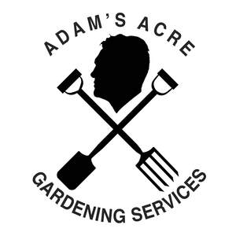

Trade Mark Journal No.2025/025 20 June 2025
UK00004212859 3 June 2025 (1,8,21,44)

- Class 1
- Controlled-release fertilizers for gardening; Peat pots for horticulture; Pots (Peat -) for horticulture; Chemicals used in horticulture; Chemicals for use in horticulture; Perlite for use in horticulture; Mulch for soil enrichment in horticultural environments; Growing media, fertilizers and chemicals for use in agriculture, horticulture and forestry; Horticultural growing media composts; Chemicals used in agriculture, horticulture and forestry; Horticulture growing media; Fertilisers, and chemicals for use in agriculture, horticulture and forestry; Garden feeds [fertilizers]; Potting compost; Peat pots for horticultural use; Manures for flowerpot plants; Fertilizers for household plants; Horticultural potting mixtures; Substrates used in agriculture, horticulture and forestry; Chemically treated peat for use in gardening; Gases for use in horticulture.
- Class 8
- Trowels [gardening]; Gardening trowels; Gardening shears; Gardening scissors; Hand-powered cultivators for gardening; Three-prong cultivators for gardening; Hand-operated tools for gardening; Hand powered three-prong cultivators for gardening; Sprayers [hand-operated] for use in horticulture; Garden tools, hand-operated; Agricultural, gardening and landscaping tools; Gardening tools (Hand operated -).
- Class 21
- Gardening gloves; Gloves (Gardening -); Gloves for gardening; Raised garden planters ; Sprinklers for watering flowers and plants; Repotting containers for plants; Garden gnomes of earthenware; Indoor terrariums [plant cultivation]; Terrariums (Indoor -) [plant cultivation]; Garden hose sprayers; Garden syringes; Cooking pots; Garden gnomes of glass; Garden gnomes of porcelain; Indoor terrariums for plants.
- Class 44
- Gardening; Landscaping [gardening]; Horticulture, gardening and landscaping; Gardener and gardening services; Landscape gardening; Gardening (Landscape -); Gardening advice; Gardening services; Landscape gardening services; Horticulture; Landscape gardening design for others; Garden tree planting; Garden maintenance; Gardening information and advice; Advisory services relating to water gardening; Horticulture services; Hydroponic farming services; Agriculture, horticulture and forestry services; Landscape gardening of floral displays for the interior of buildings; Agricultural, horticulture and forestry services; Consultancy relating to agriculture, horticulture and forestry; Insecticide spraying for horticulture; Garden or flower bed care; Pest control services for agriculture, horticulture and forestry; Garden design services; Agriculture, aquaculture, horticulture and forestry services; Horticultural services; Insecticide spraying for agricultural, horticultural and forestry purposes; Cultivation of plants; Rental of gardening implements; Rental of animals for gardening purposes; Providing community gardening facilities; Weed killing for agriculture, horticulture and forestry; Planting of flora; Winching services for agriculture, horticulture and forestry; Providing information relating to garden tree planting; Providing information about gardening; Fumigation for pest control for agriculture, horticulture and forestry; Rental of equipment for agriculture, aquaculture, horticulture and forestry; Vermin exterminating for agriculture, horticulture and forestry; Exterminating (Vermin -) for agriculture, horticulture and forestry; Vermin exterminating [for agriculture, horticulture or forestry]; Pest control services for agriculture, aquaculture, horticulture and forestry; Vermin exterminating (for agriculture, aquaculture, horticulture or forestry); Vermin exterminating for agriculture, aquaculture, horticulture and forestry.
Adam's Acre Ltd